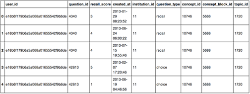
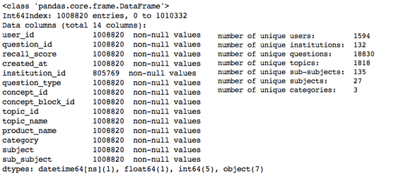
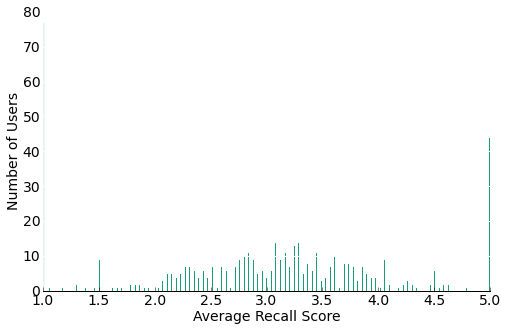
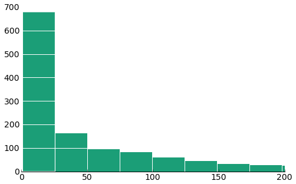
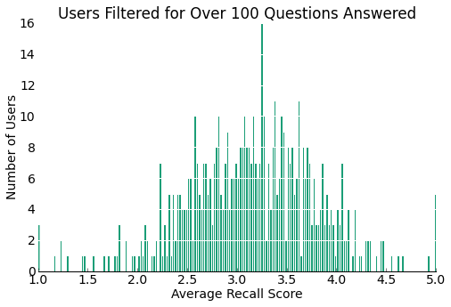
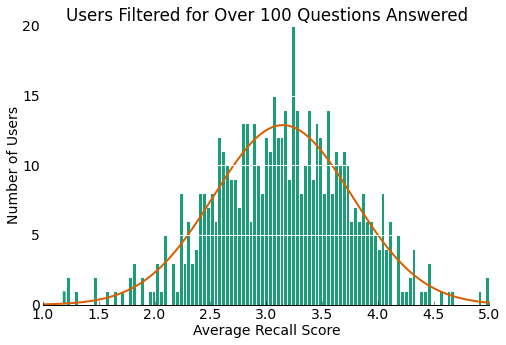

Firecracker Terms of Service and Privacy Policy
Conditions Under Which We Share Information and Aggregate Information (Non-Personally Identifiable)
Firecracker holds the right to share aggregated demographic information about our user base with our partners. This information does not identify individual users. We do not link aggregate user data with personally identifiable information. In addition, data may be aggregated regarding assessment of your performance based on various measures to create generalized data regarding use of our platform. We may use and publicize such aggregate information on any basis that does not identify you, without your consent. Your contributions or notes to a module, forum, or other service on our website (“Contribution”) may also be aggregated and made publicly available. Your Contributions may be aggregated according to their registration and login status.
Personally Identifiable Information
Except as discussed in this Privacy Policy, we do not share personally identifiable information with third parties.






Data
The data we used in this project was provided by the VP of Engineering at Firecracker, Tony Wieczorek. The information provided is proprietary and confidential and is cannot be shared outside of our group and the class instructors. As stated in Firecracker's privacy policy.
In accordance with Firecracker's terms of service and privacy policy, user emails were deleted from the data, user ids were replaced with random unique strings, and school names were replaced with institution ids. Getting this data required hassling the VP of Engineering who was very busy with other projects and was reluctant to share such a large amount of user information. After many phone calls, emails, and visits to Firecracker's office we were eventually able to obtain a large data set from Firecracker that included entire user recall histories. We also had multiple discussions with the CEO of Firecracker, Ben Williams, about which areas of the data we should explore.
The data came in the form of two CSV spreadsheets which required a decent amount of cleaning and formatting before we began data exploration.
We first import some libraries and define useful functions. This code was taken almost entirely from the homework assignments.
Data Munging
We imported a CSV that included all of the question answers for a large number of users and a CSV that included relevant information about the topics that each question belonged to.
We performed a large amount of initial exploration to get a sense of the data. There are many ways we can slice the data. For example we could look at how user scores change with the number of times they have seen the question, how user scores change with the time since they last saw the question, how scores change by question type, and how different institutions perform on different subjects among many other things. But before that we needed to get a sense of the data and how we could use it.
We wanted to compare performance across users so we looked at average user scores.
Clearly we need to do some filtering on the users. The large bins exactly on 1, 2, 4, and 5 suggest users who have not answered many questions and thus have an integer average recall score.
A large number of users have answered less than 50 questions. If we look at average recall scores for users who have answered over 50 questions and plot a histogram like before, we get the following chart.
If we filter for users who have answered over 100 questions, then we now have 566 of our 1594 total users. As we can see above, there are still a couple users with average scores exactly equal to 1 and 5 even with over 100 questions answered. We will remove these outliers because it is very unlikely that a user always knows the answer to a question perfectly or always does not know the answer at all when they have done over 100 questions. Also, it is interesting that the histogram of user average scores looks somewhat normally distributed. We expected the distribution of average scores to be centered around a 3 because Firecracker is supposed to schedule users to review a question when they are at risk of forgetting it, which would be at a score range of 3.
As we can see, our filtered data set is not much smaller. It is now 982,225 rows of the total 1,008,820 rows.
Now that we've done some filtering on our data and have a sense for the number of users, number of questions, and user recall score averages, let's look at how average user scores change with the number of times they have seen a question. We are expecting an upward trend with recall score average and the number of times a question has been seen.